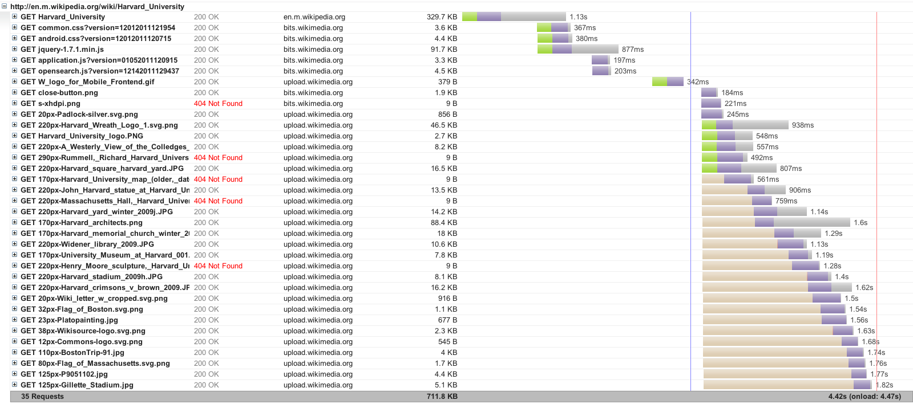
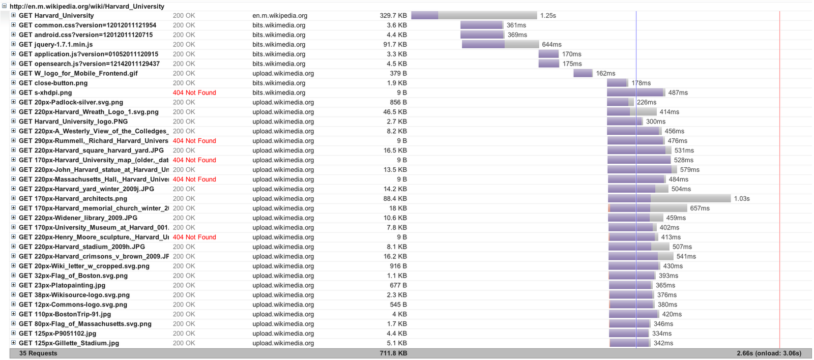

HTTP/2 - The Next Generation
The Necko Team
dev-tech-network@lists.mozilla.org
HTTP/2
The next generation of the protocol that powers the open web.
The Necko Team, Mozila Summit Innovation Fair, 5 October 2013
What does it do?
What does it do?
Unlimited
parallelism!
Prioritization
Scalablity
Always Secure
Server Push
Why?
Why?
Performance (especially for mobile!)
One object = One URI
Promote Security
Promote Scalability
Play nice with others
Image by Chris Heilmann
Show Me
The Mobile Web on HTTP/1

Harvard University Mobile Wikipedia page, served over HTTP/1 - 4.4s load time (
Google
)
The Mobile Web on HTTP/2

Harvard University Mobile Wikipedia page, served over SPDY - 2.6s load time (
Google
)
Status
SPDY/2, SPDY/3, SPDY/3.1, HTTP/2-draft04, HTTP/2-draft06 — All contributed to the community.
Facebook, Twitter, Google, Wordpress, NginX
1
, Apache
2
— All have one of the above available
today
.
Firefox, Chrome(ium), Opera, IE11 — All can speak SPDY/3 (or higher).
Standardization expected within a year.